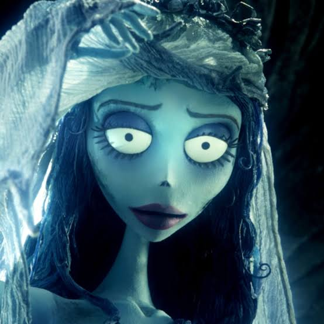

Tim Burton es un director de cine estadounidense conocido por su estilo visual único y sus películas góticas y fantásticas. A lo largo de su carrera, ha dirigido numerosas películas que han dejado una marca significativa en la industria cinematográfica.
Algunas de las películas más destacadas de Tim Burton incluyen:
Tim Burton empezó trabajando como animador en Disney y nunca ha abandonado la animación. En sus películas de stop-motion cada muñeco se mueve a mano, fotograma a fotograma, como en Corpse Bride o The Nightmare Before Christmas, que produjo y dirigió Henry Selick.

En sus películas con actores mezcla terror y humor negro. Beetlejuice, Edward Scissorhands y sus dos películas de Batman le hicieron famoso a finales de los ochenta, y con Sweeney Todd se atrevió incluso con un musical.